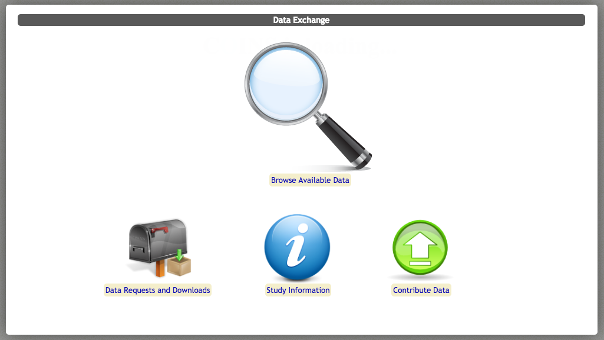
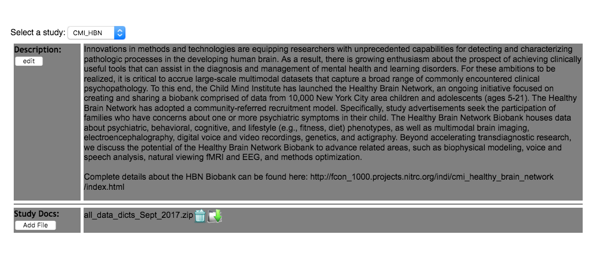
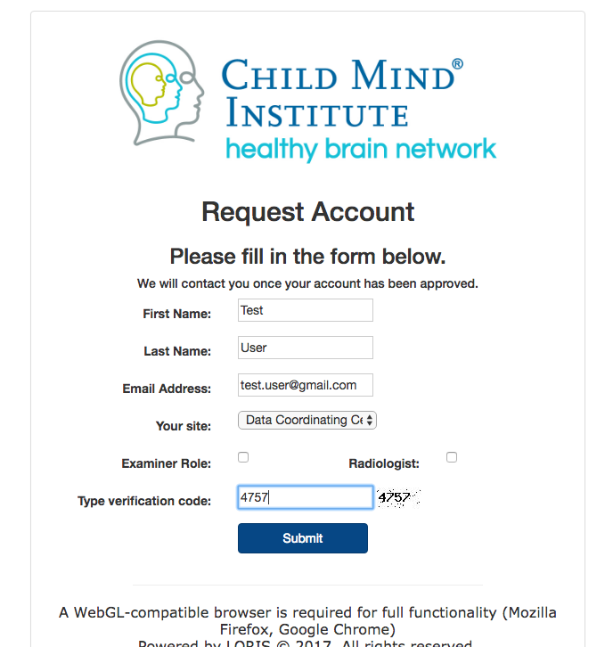
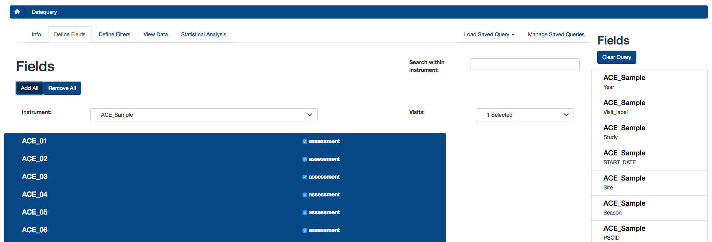
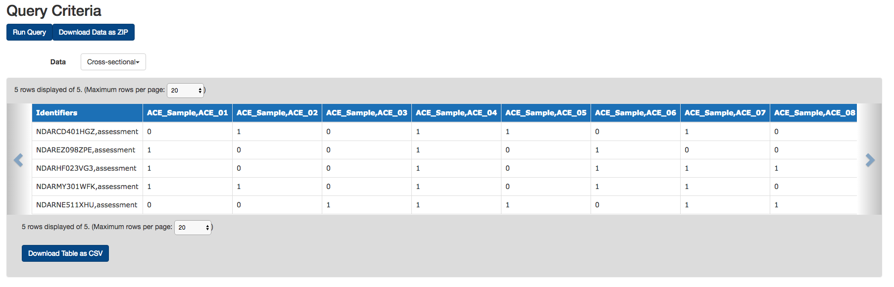
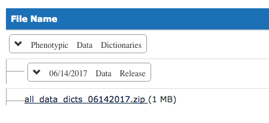

Phenotypic Data Access¶
Phenotypic data may be accessed through the COllaborative Informatics and Neuroimaging Suite (COINS) Data Exchange or an HBN-dedicated instance of the Longitudinal Online Research and Imaging System (LORIS). Prior to entering clinical data into these data sharing tools, all personal identifiers defined as Protected Health Information (PHI) by the Health Insurance Portability and Accountability Act (HIPAA) are removed. Consistent with standard FCP/INDI protocols, users receive meta-data as comma-separated files (.csv) which does not contain any participant PHI. For each participant, a unique random identifier is used to label all data.
Participant Identifiers¶
Before entry into the HBN Biobank, all data are de-identified. Specifically, this process requires the removal of any and all personal identifiers specified by the Health Information in Accordance with the Health Insurance Portability and Accountability Act (HIPAA). During the consent process, all participants provide informed consent for their data to be openly shared following this de-identification process. Data sharing occurs through the 1000 Functional Connectomes Project and its International Neuroimaging Data-sharing Initiative (FCP/INDI)(Mennes et al. 2013).
Electronic Data. Electronic data is collected via NextGen. NextGen provides the infrastructure for both the collection of applicable phenotypic assessments and the participant portal. All data collected electronically is stricken of any participant protected health information (PHI). Participants are given a random unique identifier, generated directly from the electronic data capture system or the Global Unique Identified (GUID) Tool at the start of participation. The GUID Tool is a customized software application that generates a Global Unique Identifier for each study participant. The GUID is made up of random alpha-numeric characters and is NOT generated from PHI. As such, it has been approved by the NIH Office of General Counsel. All data are labeled with this unique identifier. Applicable participants receive a unique login and password to enter on the Healthy Brain Networks participant portal that serves as a secure, HIPAA-compliant, easy way for participants, and parents of participants, to complete relevant study measures assessments that are not collected during the face-to-face session. The Participant Portal is equipped with a variety of security features, including 128-bit encryption, firewall, anti-virus software, and intrusion detection software. Messaging features are also secure. All electronic data collected as part of the HBN initiative is kept on password- protected computers. Only approved researchers will be granted with logins for electronic data entry, review, and processing.
Paper Records. Paper records, including consent, assent, and HIPAA forms, and paper-CRFs are kept in participant files in locked file cabinets. These materials are additional kept behind locked doors. Participant data collected via paper-CRFs will not contain any participant PHI. These data forms will be de-identified and contain only the participant’s unique identifier. Additionally, data collected via paper are inputted into the electronic data system. Therefore all participant data are contained within a single, secure, electronic system to facilitate data sharing efforts of the project.
Participant Privacy. Confidentiality was a paramount consideration in planning data-sharing requirements. Protecting participant privacy while also providing access to extensively revealing data was a goal. All imaging data are fully anonymized in compliance with HIPAA by removing any potential protected health information identifiers, including identifying facial features from anatomical images, and randomizing the timing of release. It is important to note that data users must be aware of the possible negative impact of defacing on some analysis toolkits (e.g., FreeSurfer), and exercise additional care when producing such images and/or sharing pre-processed surfaces.
Data Usage Agreement¶
Given these considerations, the HBN Dataset is requiring a data usage agreement for access to the data in the same manner as the NKI Rockland Sample. The adoption of a data usage agreement is not intended to limit the specific analyses a researcher can perform; users will only need to specify the broad range of analyses they may pursue with the data (e.g., association studies between DTI, R-fMRI, and behavior), not a specific analysis or set of analyses. The intent of the agreement is to ensure that data users agree to protect participant confidentiality when handling data that contains potentially identifying information and that they will agree to take the necessary measures to prevent breaches of privacy. The specific agreement to be employed for the HBN Dataset are those previously defined by the New York State Office of Mental Health, and can be found in the Data Usage Agreement (DUA).
Unlike the NDAR agreement, institutional review board (IRB) approval is not required for transfer of the data; it will be up to the individual data user to satisfy any additional requirements specified by their local IRB or ethics committee, prior to using the HBN Dataset. Given that local IRB approval is not required as part of an individuals application for access to the HBN Dataset, there is no need for an individual’s IRB to have a federal-wise assurance number – which can limit recipients of the NDAR datasets.
- Complete the Data Usage Agreement (DUA).
For your convenience, the DUA is already completed in its entirety with HBN-approved text for data handling.
Investigators simply need to:
- Download the DUA form.
- Review all contents.
- Provide appropriate information regarding their name(s) and institution.
- Have the document signed and notarized by the appropriate institutional representative.
- Scan and send us the document.
When your application has been received and approved, you will receive an email providing you access to all phenotypic (single-item and summary) and imaging data in the COINS Database.
Note: If your institution requests any clarifications regarding DUA, just contact us and let us know – we are happy to work with you and will be developing a Frequently Asked Questions page as questions emerge.
COINS Data Exchange¶
Protected behavioral and cognitive assessment data are available on the COllaborative Informatics and Neuroimaging Suite (COINS). The Collaborative Informatics and Neuroimaging Suite (COINS; Scott et al., 2011), developed by the Mind Research Network, was created to facilitate communication and cultivate a data-sharing community by providing researchers with an open source information system that includes web-based tools to manage studies, subjects, imaging, and phenotypic data. This suite of tools has an intuitive ease of use and offers versatile data upload/import/entry options, rapid and secure sharing of data among investigators, querying of data types and assessments, real-time reporting, and study-management tools. Among its many features, the web-based assessments, automated data scoring, and integrated management of phenotypic and imaging data are potentially the most attractive. Web-based assessment entry completed by participants and research staff increases efficiency and accuracy by eliminating the need for intermediate data entry (i.e., paper to computer). Equally important, individual item-level responses are coded in the database, providing researchers with a far richer phenotypic dataset for exploration. In addition, protected health information can be unlinked within COINS to facilitate data sharing while maximally protecting participant anonymity. Of note, COINS is in compliance with Health Insurance Portability and Accountability Act (HIPAA) standards and implementation rules.
To access the data, go to: http://coins.mrn.org/dataexchange
There, you can log in using your COINS user ID and password. If you do not have an account, select the "Get Account" option.
From the Data Exchange menu at the top, select Browse Available Data. Drag the green Studies box into the box labeled Request Workspace, and under Study Name, select CMI_HBN. Next, drag an AND Data Group. Select Send Request to download the data. It should appear as below:
For users new to COINS, we recommend watching the Video Tutorial available below (also available at the top-left of the Browse Available Data page).
Additional files:
Data dictionaries for each assessment are also available through COINS Data Exchange.
- Navigate to the main screen of the COINS Data Exchange. It should appear as follows:
- Click on Study Information.
- Under Select a Study, navigate to CMI_HBN.


LORIS¶
HBN phenotypic data is also available on LORIS (Longitudinal Online Research and Imaging System), is a web-based data and project management software for neuroimaging research studies.
LORIS is designed to simplify integration, management, and dissemination of cohort studies that involve various neuroimaging modalities, behavioral tests, and genetic and neurophysiological data. It provides secure web-based access to data validation and quality control modules, as well as visualization and basic statistical tools. LORIS is in compliance with Health Insurance Portability and Accountability Act (HIPAA) standards and implementation rules.
In order to download data from LORIS, first navigate to: http://data.healthybrainnetwork.org.
On the login panel, click Request Account and fill out your credentials on the following form. Select site as Data Coordinating Center, and leave the 2 checkboxes unchecked. Once you your data usage agreement has been filed, you will receive an email with a temporary password.
Log onto LORIS with your credentials, and you will then be prompted to reset your password. Once your password is reset, you will be directed to the main LORIS page.
Navigate to Reports > Data Query Tool > Define Fields. Choose each instrument you would like to download, and either select specific assessment items or select Add All. Navigate to the Define Filters tab to set any filters to your query. To save a query for future use, click Manage Saved Queries > Save Current Query.
Finally, click on the View Data tab, click Run Query, and click Download Table as CSV to start
The Document Repository feature allows users to upload projects files that are easily viewable by other users. For the HBN, the Document Repository current stores data dictionaries for phenotypic data containing question and score labels. In order to download data dictionaries, navigate to Tools > Document Repository. On the table, navigate to Phenotypic Data Dictionaries and click on the most recent link to download a zip file containing all data dictionaries.


- Home
- Link to Manuscript
- Project Plan
- Data Release Timeline
- Release Notes
- Fixes and Updates
- Inclusion/Exclusion Criteria
- Recruitment
- Participant Schedule
- EEG Protocol
- MRI Protocol
- Assessments
- Protocol Timeline
- Behavior Monitoring Technologies
- Sample Characteristics
- Neuroimaging Data Access
- Phenotypic Data Access
- Data Quality
- Citation of Data Usage
- Support